Sets, Groups, Tags, and Attributes
A typical study compares two parts of a project, such as activists’ texts against skeptic texts, or one outlet against all others. LemmaLoom offers multiple ways to characterize the two parts. An attribute stores factual information pertaining to each document. Sets and smart sets represent named collections of documents that an analysis could cover, groups organize your list of documents in the navigation sidebar, and finally tags provide a completely freeform way of labeling documents in all your projects.
Edit ▸ Undo (⌘Z) allows you to undo changes made to sets, smart sets, tags, and attributes. The menu item specifies precisely what is being undone, such as Undo New Set or Undo Set Value. More detail can be found in Chapter 23, Undo and Redo.
Key terms
- Sets are named collections of documents manually added to the set by you. Any number of sets may contain a document, and sets can act as scopes of analyses, which are the documents analyzed in an analysis task.
- Smart sets are sets whose documents depend on conditions. Whenever something their members depend on changes, LemmaLoom recalculates members of the smart set accordingly.
- Conditions test the value of one particular property in a document and consist of a field, comparison, and usually a value. As an example, the condition might test whether “Readership” is at least 100,000.
- Groups are folders in the Documents section of the sidebar. Unlike with sets, documents belong to at most one group each.
- Tags are brief, free-form labels used to describe aspects of documents, such as “op-ed” or “viral”. Tags exist globally across all of your projects.
- Attributes are facts about each document within a project, defined once for the project, such as “Stance” or “Publication Date”. Every document belonging to a project can have its own value of an attribute.
- Original documents refer to those that are not translations. Sets always consist of original documents. Any analysis task involving sets, tags, or full projects reads original documents unless you ask for translations.
Which one to use
| Set | Smart set | Group | Tag | Attribute | |
|---|---|---|---|---|---|
| A document gets in when | you add it | it meets the conditions | you move it there | you type the tag | you enter a value |
| Per document | any number of sets | any number of smart sets | at most one group | any number of tags | one value per attribute |
| Belongs to | the project | the project | the project | the project (names shared by all projects) | the project |
| Opens in a tab with the project’s views | yes | yes | no | yes | no |
Which of the options listed above works for you depends on what you wish to achieve with your documents afterward.
- An attribute holds any factual value of interest, which could help you compare and filter your documents later. The position taken by the text in question, the publication outlet, date, etc., are common examples.
- Where there are no specific criteria for collecting documents, you can opt for a set. The set option is appropriate where analyses must focus exclusively on your selected subset of documents. A set would come in handy during analyses of documents picked by hand, for instance, for close readings or discussions with colleagues.
- A smart set fits when attribute values, tags, or other properties already say which documents belong together. It keeps up by itself as you add texts or correct a value.
- Unlike document sets, groups merely organize the documents in the navigation sidebar, for example, by the kind of material or where it came from.
- A tag is a free-form label without a value. Tags fit labels you use the same way in several projects, and each tag opens its documents in a tab, much like a set.
The “Climate Debate” project has documents organized in various ways; the activists’ texts and the skeptics’ texts make up sets named “Activists” and “Skeptics”. A few articles have been assigned the tags “op-ed” and “viral”. The documents also appear sorted based on the publication medium, in the groups “Print” and “Online”.
Attributes in “Climate Debate”, for instance, the “Stance” attribute, make it possible to analyze the difference in codings applied to activist versus skeptic texts. The smart set “Wide Reach” automatically updates itself according to a predetermined criterion of high “Readership”.
The examples in this chapter
The examples use “Climate Debate”, which is the example project for this guide (see The example project in Chapter 1, Introduction). This example project comes pre-indexed and contains 14 original documents with these values, groups, and tags:
| Document | Stance | Readership | Publication Date | Outlet | Group | Tags |
|---|---|---|---|---|---|---|
| Running Out of Time | Activist | 412,000 | 2024-08-21 | The Northern Herald | op-ed | |
| Letter from the Climate Strike | Activist | 186,000 | 2024-09-02 | Greenline Blog | Online | viral |
| Why We Block the Roads | Activist | 41,000 | 2023-11-14 | Greenline Blog | Online | |
| Farmers Are Not the Enemy | Activist | 23,000 | 2024-08-09 | Farm & Field | ||
| A Mayor’s Promise | Activist | 8,500 | 2024-10-08 | City Hall Bulletin | Online | |
| Hope Takes Work | Activist | 72,000 | 2023-12-02 | The Weekly Ledger | ||
| The Models Keep Missing | Skeptic | 96,000 | 2024-03-12 | The Weekly Ledger | ||
| Net Zero Will Cost You | Skeptic | 398,000 | 2024-10-22 | The Northern Herald | op-ed | |
| Let’s Not Panic | Skeptic | 254,000 | 2024-09-26 | Plain Talk Online | Online | viral |
| Who Pays for the Transition | Skeptic | 57,000 | 2024-11-05 | Plain Talk Online | Online | op-ed |
| Science Is Never Settled | Skeptic | 68,000 | 2024-06-18 | The Weekly Ledger | ||
| Heat Wave Report 2024 | Neutral | 3,100 | 2024-09-16 | Weather and Climate Agency | ||
| Carbon Tax Debate | Neutral | 875,000 | 2024-09-19 | The Northern Herald | ||
| Radio Debate | Neutral | 310,000 | 2024-09-17 | Radio Northline | Online |
Neither “Heat Wave Report 2024” nor “Carbon Tax Debate” belongs to any group or has any tags associated with it. “Running Out of Time (German)” is the project’s fifteenth document; because it is a translation, it shares its values, group, and tags with the original “Running Out of Time”. The set “Activists” contains the six documents whose “Stance” is “Activist”, while “Skeptics” contains the five documents whose “Stance” is “Skeptic”. Lastly, the smart set “Wide Reach” contains the documents with a “Readership” of at least 100,000. The recording of “Radio Debate” lasts 4 minutes and 49 seconds.
Sets
Sets specify which documents are analyzed. In “Climate Debate”, both “Activists” and “Skeptics” consist of texts from one side. There is a keyword query in the “Activists” set which contrasts the words in its documents against those in the “Skeptics” set. A keyword list contrasts a set against another set or against everything else in the project. If your study involves comparing categories of text, each category should get its own set.
In the Sets section of the navigation sidebar, the sets and smart sets in your project are organized according to when they were added, along with the number of documents each contains. Handmade sets feature a stack icon, while smart sets have a filter icon. Expanding the disclosure triangle next to a set reveals its documents. Clicking on one of the documents will open it.
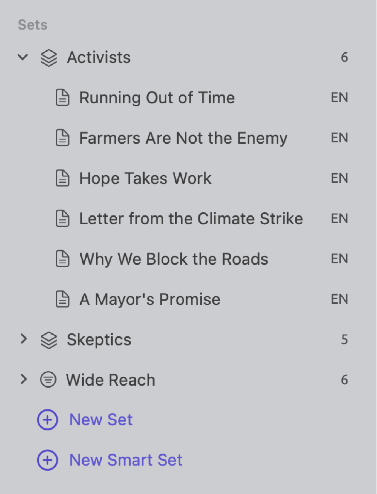
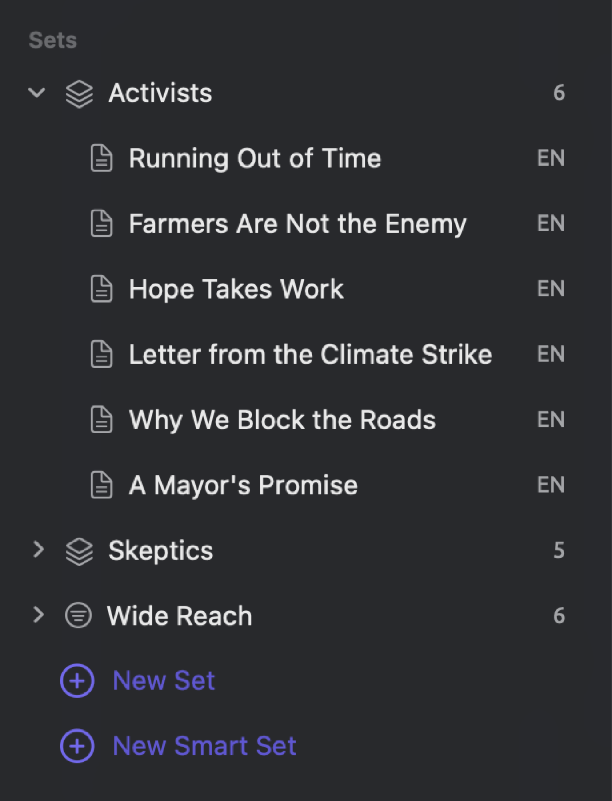
Making a set
Making a set is quickest from preselected documents. The figure below shows six texts from the activist side of “Climate Debate” already selected in the navigation sidebar, with Add to Set open in their shortcut menu. “Activists” is disabled in the submenu because it already contains all six documents.
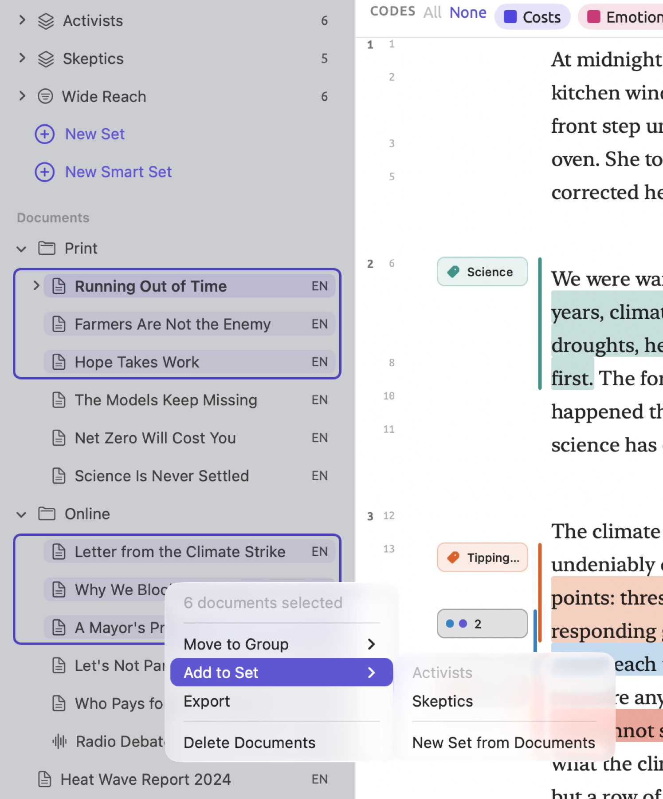
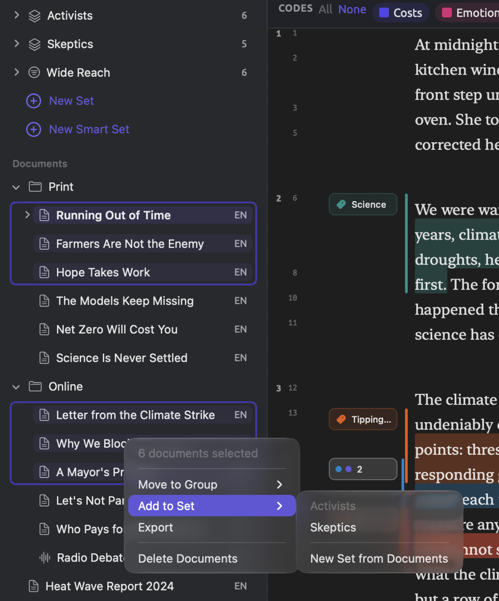
To turn your selection into a set:
- Select the documents in the Documents section (⌘-click or ⇧-click to select several).
- Right-click one of the selected documents and choose Add to Set ▸ New Set from Documents.
- Type the set’s name and press Return.
In a large project, you can input part of the name into the Search Documents bar at the top of the navigation sidebar and select your desired documents from the results list. Project ▸ Add to Set gives you access to the same commands as the shortcut menu.
Should you wish to make a set from a single document, then right-click the document and then go to Sets ▸ New Set from Document. Until renamed, the resulting set retains the placeholder name “New Set from Document”.
An empty set may also be made first, to be filled at your convenience, by selecting New Set at the bottom of the Sets section or selecting Project ▸ New Set. Enter the desired name, then confirm by pressing Return; pressing Escape maintains the placeholder name “New Set”.
Alternatively, you could construct a set out of the documents with hits from a particular query. Choose Create Set from Hits under the query’s Actions menu; the set is named after the query (see Create Set from Hits in Chapter 18, Using Query Results).
Adding and removing documents
Adding one document to a set involves selecting the document in the Documents section, opening the shortcut menu via right-clicking, going to Sets, and picking the set to add it to. Adding multiple documents would involve selecting the documents first, then right-clicking one document and choosing Add to Set followed by selecting the set to place them into. Any sets which contain every selected document will be disabled. Only ordinary sets are listed, since the conditions of a smart set dictate its content.
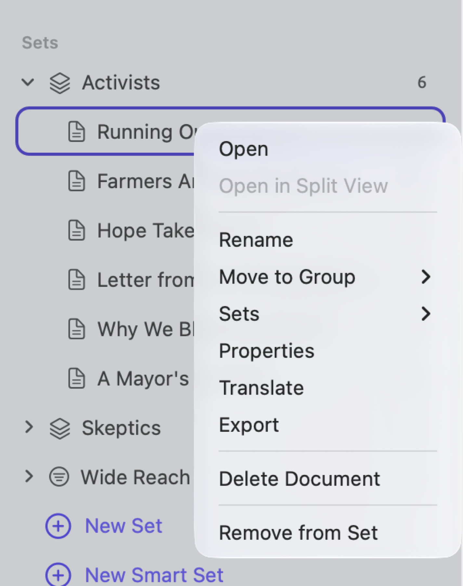
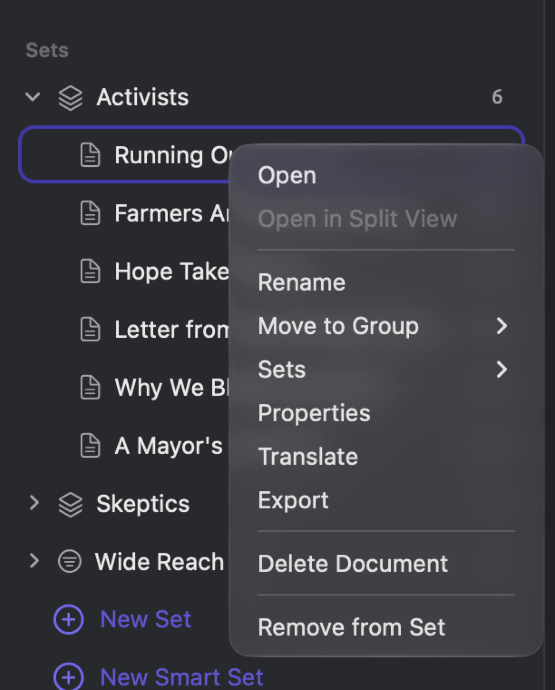
To remove a document from a set:
- Click the disclosure triangle beside the set.
- Right-click the document and choose Remove from Set.
There’s also the Project ▸ Remove from Set menu entry, which you access after clicking the document below the set. Once you delete the document from the project, the document leaves all existing sets.
To remove several documents, ⌘-click on them all underneath the set. Either right-click one of them or open the Project menu to access Remove from Set. Remove from Set becomes disabled when the selection also holds documents under another set or in the Documents section.
Document sets contain only originals. When a translation is added with Add to Set, its original is added instead. Translations later in this chapter goes deeper into the implications of having translations involved in analyses.
Opening a set
Sets are opened in tabs, containing all ten views seen under Project on the navigation sidebar (Codebook to Queries). However, the ten views contained within sets pertain only to the documents that belong to the set.
Open a set by clicking on its title, or right-clicking the set and choosing Open Set. The header of the tab shows the name of the set and how many documents it contains. For more detail about each of the ten views, refer to The project shelf in Chapter 3, Projects and Documents.
Word sketches drawn from the set are opened in their own window via the shortcut menu option Word Sketch.
Renaming, exporting, and deleting a set
These options appear in the shortcut menu for a set:
- Rename transforms the set’s name into an editable field. Enter your desired name, then hit Return.
- Export exports all the documents contained within a set along with the set itself in a LemmaLoom archive file. This option lets you pass one part of a project on to a colleague (see Chapter 22, Exchanging and Exporting).
- Delete Set immediately deletes the selected set. Edit ▸ Undo Delete Set (⌘Z) recovers the deleted set. After you click a set, Project ▸ Delete Set (⌘⌫) deletes it too.
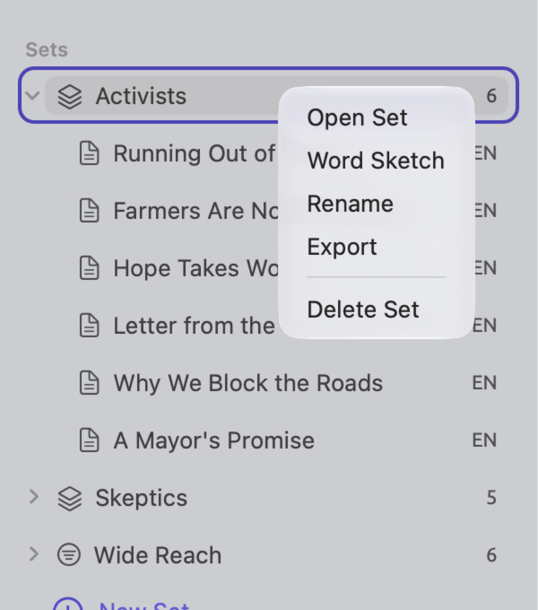
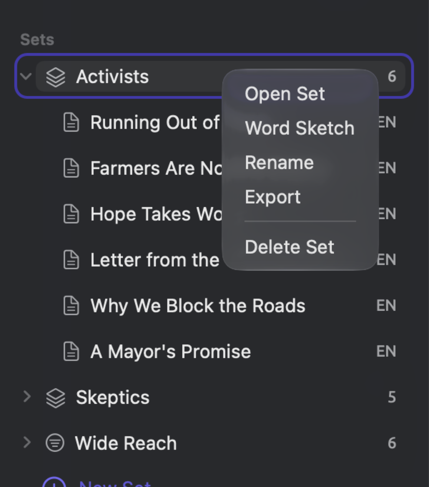
After deleting a set, codes with a Scope equal to the deleted set show None in the Document set menu. Choose another document set or scope to use them again (see Where a code can be used in Chapter 7, Coding). Any queries saved in the set move to the project’s Queries view.
Smart sets
Smart sets contain the documents which match their conditions. Within the example project “Climate Debate”, the smart set “Wide Reach” contains six documents whose “Readership” is at least 100,000. Were the “Readership” of “The Models Keep Missing” corrected from 96,000 to 104,000, the document would instantly become part of the “Wide Reach” set, reflected by an increment of one, to 7, in the count next to the set title.
In most respects, a smart set behaves as a regular set would. A smart set opens in a tab with the same views, and a smart set can serve as a scope anywhere a set might. Since a smart set’s membership comes solely from its conditions, you would modify its content by editing its conditions.
Anytime an analysis is run on a smart set, its current documents get read by that analysis. This means running an analysis on the “Wide Reach” smart set today could potentially return different results compared to doing the same thing on the “Wide Reach” set next week, if values have changed in between.
Creating a smart set
“Wide Reach” requires just one condition, but a smart set can combine several. Shown below is the dialog while creating the narrower smart set “Widely Read Activists”, which requires both conditions, “Stance” is any of “Activist” and “Readership” is at least 100,000. As shown by its count (2 documents), the smart set includes just “Running Out of Time” and “Letter from the Climate Strike”.
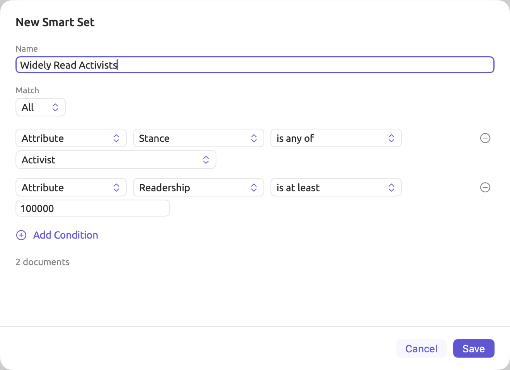
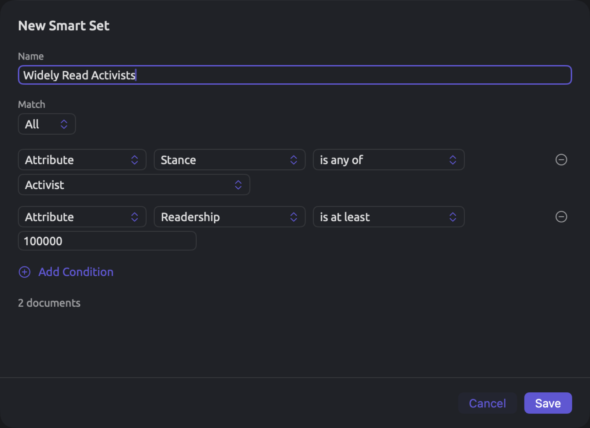
To make a smart set:
- Click New Smart Set at the end of the Sets section, or choose Project ▸ New Smart Set. The New Smart Set dialog opens with one condition.
- In Name, type a name for the smart set.
- Set up the condition. Choose the field in the first menu (for Attribute, also the attribute in the second), then the comparison, and give the value (see Values in a condition later in this chapter).
- To test something else as well, click Add Condition and set up the new condition in the same way.
- In Match, choose All or Any (see All or Any below).
- Check the count below the conditions, and click Save.
Each condition occupies one row. The first menu allows choosing a field, such as Attribute, Tags, or Title. When choosing Attribute, a second menu selects the attribute. Then the next menu lets you pick from all comparisons applicable to the field. Finally, you input the value. The remove button at the end of a row (Remove condition) removes a condition, though this button becomes disabled when there is just one condition remaining (Only one left).
By default, a new condition always uses the project’s first attribute, along with that attribute’s first comparison. Thus, a fresh condition for “Climate Debate” will automatically use Attribute, “Stance”, is any of. If there were no attributes defined within a project, then the initial condition would automatically default to Tags with has any of.
The counter updates dynamically, allowing you to preview your smart set as you build the conditions, seeing how many of the original documents in the project satisfy the conditions you have finished. Until you complete a condition, the counter includes all original documents. So, while building the initial condition for “Climate Debate”, the counter reads 14, because there are fourteen original documents.
Save will stay disabled until you fill the smart set’s Name (Name is empty) and finish every condition (Incomplete). You can hover the mouse pointer over Save to learn the exact reason why. Incomplete means that a condition requires a value and lacks one, for example, is at least when nothing has been entered into the field or is any of without selecting items.
Changing a condition’s field resets its value but retains the comparison whenever possible, or selects the field’s first comparison otherwise. If you change a condition’s comparison, the value is retained, so you can switch from is at least to is greater than without typing the number again.
Queries for finding documents may also be stored as smart sets (see Saving a document query as a smart set in Chapter 18, Using Query Results).
All or Any
Match controls the logic between your conditions. When setting Match to All, all of your conditions must hold true for a document; adding another condition narrows your smart set. Matching by Any requires that one of your conditions holds true for a document.
In the case of “Widely Read Activists” shown in the figure above, two conditions are specified. First, six documents have a “Stance” of “Activist”, which include “Running Out of Time”, “Letter from the Climate Strike”, “Why We Block the Roads”, “Farmers Are Not the Enemy”, “A Mayor’s Promise”, and “Hope Takes Work”. Second, six documents have a “Readership” of at least 100,000, which include “Running Out of Time”, “Letter from the Climate Strike”, “Net Zero Will Cost You”, “Let’s Not Panic”, “Carbon Tax Debate”, and “Radio Debate”.
| Match | Documents in the smart set | Count |
|---|---|---|
| All | those on both lists, “Running Out of Time” and “Letter from the Climate Strike” | 2 |
| Any | those on either list, namely the six activist texts, “Net Zero Will Cost You”, “Let’s Not Panic”, “Carbon Tax Debate”, and “Radio Debate” | 10 |
There are two documents common to both lists. Summing the sizes of the two individual lists, 6 and 6, would result in counting the two documents twice; hence, Any returns 6 + 6 − 2 = 10 documents.
All conditions of a smart set combine in the same way, considering only properties pertaining directly to the document itself. The rule “activists with a readership of at least 100,000, or any skeptic,” or a rule querying membership in another set requires a query rather than a smart set. Queries allow nesting of rules (Add Group), which has nothing to do with document groups, and have a Set field (see Groups in Chapter 15, Building a Query).
Fields
A condition’s first menu contains the fields listed below. Attribute shows up here only if there are attributes defined within your project.
| Field | What it tests | Comparisons |
|---|---|---|
| Attribute | the value of the attribute chosen in the second menu | depend on the attribute’s type (see Comparisons for attributes) |
| Tags | the document’s tags | has any of, has all of, has none of, is empty, is not empty |
| Group | the group the document is in | is any of, is none of, is empty, is not empty |
| Language | the document’s language | is any of, is none of |
| Format | Text, PDF, Web Pages, Audio, or Video | is any of, is none of |
| Title | the document’s name | is, is not, contains, does not contain, matches, is empty, is not empty |
| Authors | the authors in Document Properties | as for Tags |
| Date | the document’s own date from Document Properties | is, is before, is after, is on or after, is on or before, is between, is empty, is not empty |
| Publisher, Publication, URL, DOI | the citation details | as for Title |
| Source File | the name of the imported file, or the address of the imported web page | as for Title |
| Created | the day the document was added to the project | as for Date |
| Modified | the day the document was last changed | as for Date |
| Color | the document’s color | is any of, is none of, is empty, is not empty |
| Tokens | the number of words and punctuation marks, counted when the document is indexed | is, is not, is less than, is at most, is greater than, is at least, is between, is empty, is not empty |
| Sentences | the number of sentences, counted when the document is indexed | as for Tokens |
| Characters | the number of characters in the text, spaces included | as for Tokens |
| Media Duration | the length of an audio or video recording | as for Tokens |
| Has Media | whether the document is an audio or video recording | is true, is false, is empty |
| Has Translations | whether the document has at least one translation | as for Has Media |
| Indexing Skipped | whether the document was imported without indexing and has not been started with Index Now since | as for Has Media |
| Index Status | the state of the document’s indexing | is any of, is none of, is empty, is not empty |
Language lists only the languages that your original documents are written in. “Climate Debate” is a project consisting of just English originals since its sole German document is a translation.
Modified refers to the last time your document was edited, renamed, moved between groups, or had its tags or properties altered. Changing its attribute values in the Attributes window, or renaming or deleting a tag in the Tags window, does not affect its Modified date.
LemmaLoom automatically computes Tokens and Sentences during indexing. Both remain equal to 0 until the process has occurred. You may want to include documents based on conditions like Tokens is less than 700. Such a condition also catches documents still waiting to be indexed, and adding a condition like Index Status is any of Indexed helps filter them out. The Characters count uses your document text directly as a source and is there from the moment of import.
Has Media, Has Translations, and Indexing Skipped all evaluate to either true or false. Likewise, Index Status always evaluates to one of the seven values below:
| Value | The document |
|---|---|
| Indexed | has been indexed |
| Indexing | is being indexed now |
| Running Analyzer | is indexed, and an analyzer, built in or your own, is running on it (see Choosing analyzers for a document in Chapter 21, Analysis and Indexing) |
| Failed | could not be indexed |
| Not Indexed | is waiting to be indexed |
| Unsupported | is in a language other than English, German, and Chinese |
| Skipped | was imported without indexing and has not been indexed since |
A smart set with Index Status is any of Failed, Not Indexed, and Skipped contains all of the documents that are waiting for some sort of action to be taken. Documents leave the smart set once they are indexed. To find every document imported without indexing, use Indexing Skipped is true. For more information on the states, see Finding documents by their index status in Chapter 21, Analysis and Indexing.
Comparisons for attributes
Comparisons on attributes depend on the attribute’s type:
| Type | Comparisons |
|---|---|
| Text | is, is not, contains, does not contain, matches, is empty, is not empty |
| Integer, Decimal | is, is not, is less than, is at most, is greater than, is at least, is between, is empty, is not empty |
| Date | is, is before, is after, is on or after, is on or before, is between, is empty, is not empty |
| Boolean | is true, is false, is empty |
| Picker | is any of, is none of, is empty, is not empty |
Values in a condition
The method you use to enter a condition value differs according to both the comparison and the field:
- For text and numbers, enter the condition value in the Value field. When entering values for is between, note that it shows two fields, that the two values can go in either order, and that both are inclusive. Thus, when searching for “Readership” is between
50000and100000, results would include documents whose “Readership” value equaled exactly 50,000 or 100,000. - Dates are selected via a date picker, starting from the current day.
- is empty, is not empty, is true, and is false count as complete as soon as they are selected.
- For conditions involving is any of, is none of, and the various comparisons that begin with has, first click the value. Doing so causes a checklist to appear. Select one or more items, then click outside the checklist to close it; the value then shows your choice. Example values include “op-ed” or “viral”, or None when nothing is selected.
Available list entries include:
- for a Picker attribute, its choices, followed by any other values that documents still have;
- for Tags and Authors, the tags and authors used on documents in the project;
- for Group, groups belonging to the project;
- for Language, languages the original documents are written in;
- for Color, the eleven available document colors, from Red to Gray;
- for Format, the five available formats, and for Index Status, the seven states above.
Durations in Media Duration are typed as minutes and seconds (e.g., 30:00) or hours, minutes, and seconds (e.g., 1:05:30). The time is converted to seconds before comparing values; thus, 1:05:30 is equal to 1 × 3,600 + 5 × 60 + 30 = 3,930 seconds. Single values correspond to seconds. For example, “Radio Debate” lasts 4 minutes 49 seconds (4 × 60 + 49 = 289 seconds), so both Media Duration is greater than 4:00 (240 seconds) and is greater than 5 (5 seconds) match it.
Since recordings are timed to the thousandth of a second, is rarely matches a duration exactly. Instead, is at least, is at most, or is between should be employed.
How values are compared
Text comparisons disregard capitals, accents, and whitespace either at the beginning or end of a string. Comparisons ignore whether a character is full-width or half-width (wide vs narrow representations of letters and numerals in Chinese and Japanese text). A comparison with is compares the entire value, whereas contains locates your text anywhere within it. “Outlet” contains herald will locate three documents in “The Northern Herald”. “Outlet” contains the will locate seven documents, the six in “The Northern Herald” and “The Weekly Ledger” and one other document, “Heat Wave Report 2024”, since its outlet, “Weather and Climate Agency”, has the inside Weather. Be sure to check the count before saving when performing a comparison with short text strings.
A matches comparison matches the whole value with a simple text pattern. The matches comparison uses * as a wildcard meaning any sequence of characters and ? as a wildcard meaning exactly one. Title matches *Debate will locate “Carbon Tax Debate” and “Radio Debate”; Title matches Debate will locate nothing, since the pattern must match the whole title.
Number comparisons compare numbers numerically; therefore, 9 comes before 10. Dates are compared by their calendar days. is before disregards the day itself, whereas is on or before includes it. Both Created and Modified dates and times are recorded by LemmaLoom and turned into a day in your Mac’s local time zone for comparison. “Publication Date” is between September 1, 2024 and September 30, 2024 will locate five documents published within this range in “Climate Debate”.
Comparisons of lists require at least one of the selected entries for is any of or has any of; all selected entries for has all of. Neither is none of nor has none of allows documents containing any of the selected entries. Comparison of list entries, such as tags, authors, and Picker choices, disregards only capitalization and whitespace either at the beginning or end of an entry’s name. In “Climate Debate”, three documents have been tagged “op-ed” and two others “viral”:
| Condition | Documents | Count |
|---|---|---|
| Tags has any of “op-ed”, “viral” | Running Out of Time, Letter from the Climate Strike, Net Zero Will Cost You, Let’s Not Panic, Who Pays for the Transition | 5 |
| Tags has all of “op-ed”, “viral” | none | 0 |
| Tags has none of “op-ed” | the 14 originals except “Running Out of Time”, “Net Zero Will Cost You”, and “Who Pays for the Transition” | 11 |
The figure below illustrates the first of these conditions, and its tag list is expanded.
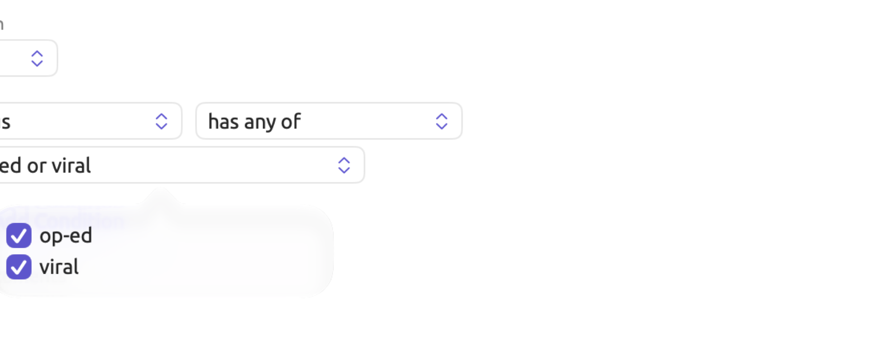
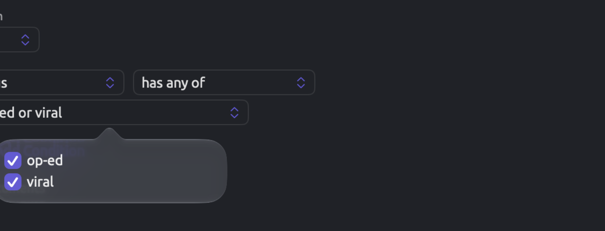
Documents without a value
A document without a value fails most comparisons. “Readership” is less than 10000 returns “A Mayor’s Promise” and “Heat Wave Report 2024”, while anything with no “Readership” at all won’t match. Examples of such documents may include newly imported documents. The five comparisons is not, does not contain, is none of, has none of, and is empty accommodate those documents.
The difference matters most with is none of. Every original in “Climate Debate” has all four attribute values, yet two originals belong to no group. Group is none of “Print” matches 8 documents, the six in “Online” along with “Heat Wave Report 2024” and “Carbon Tax Debate”, which have no groups assigned. For narrowing it down to just the six “Online” documents, add a second condition, Group is not empty, with Match left on All; this reduces the number to 6.
Boolean attributes treat unassigned documents as empty. is false returns solely those documents whose values are set to false, whether the checkbox was selected and then deselected, imported as false, or specified via the Set Value option with the checkbox deselected. Use is empty for the rest.
Changing a smart set
If you need to modify conditions in your smart set, right-click the smart set in the list in the navigation sidebar, and click Edit from the shortcut menu, or click the smart set and click Project ▸ Edit Smart Set. Editing in the Edit Smart Set dialog works in the same way as creating does in New Smart Set. Only clicking Save applies your modification. To rename a smart set, right-click the smart set, and click Rename in the shortcut menu. This changes only the name.
Renaming attributes or groups causes smart sets to adapt accordingly. Here is what deletion and other changes do:
- If you delete a group, it is removed from any condition referencing it. A Group is any of condition with nothing left selected causes a smart set that tested only that group to be emptied, and when you edit the smart set next time, you see None displayed, while Save remains disabled until you specify another group or remove the condition.
- Deleting an attribute means a failure for every document in conditions testing the attribute. With All, the smart set becomes empty; with Any, the other conditions keep working. When you open the smart set with Edit, the broken condition’s attribute menu is blank, and Save stays disabled until you change or remove the condition.
- Changing an attribute’s type can make conditions fail as well. When an attribute changes its type (e.g., “Stance” going from Picker to Text), comparisons no longer applicable to this new type mean failures for every document. Among attribute types, comparisons such as is any of are exclusive to the Picker type, so “Stance” is any of “Activist” fails. When you open the smart set with Edit, such conditions show the first comparison of the new type with an empty value; you must input the value manually, here as “Stance” is
Activist, and save. - Finally, renaming or deleting tags in Window ▸ Tags affects smart sets containing Tags conditions accordingly. Renaming a tag changes the reference name into the new name in any Tags condition. Deleting a tag removes it from has any of and has none of conditions, whereas it remains in has all of conditions and thus causes failures for every document until you edit them.
Smart sets outside LemmaLoom
The REFI-QDA exchange format understands only ordinary sets. Anytime you choose to export your project in this format, all of your smart sets are exported as ordinary sets consisting of their members at the point of export. A LemmaLoom archive retains all conditions used to define a smart set, which allows for future use within another instance of LemmaLoom. For additional details about these two formats, refer to Chapter 22, Exchanging and Exporting.
Groups
Groups serve as organizational folders for sorting documents within the Documents section in the navigation sidebar. For instance, the “Climate Debate” project contains “Print” and “Online”, which keep the print pieces apart from the online ones, and “Online” also includes “Radio Debate”. Documents may reside in a maximum of one group, while the translations of any document automatically reside within its respective group too. For more information on making, filling, renaming, and deleting groups, see Groups in Chapter 3, Projects and Documents.
To analyze the documents of a group, make a smart set with a Group condition (see Creating a smart set earlier in this chapter). Choose Group in the condition’s first menu, keep is any of, and select the group. Such a smart set changes as documents move into or out of the group. In “Climate Debate”, Group is any of “Print” collects the six documents in “Print”, and Group is empty collects the two in no group, “Heat Wave Report 2024” and “Carbon Tax Debate”.
LemmaLoom queries can also read groups through a Group field, and recipes allow the creation of query results containing counts by group (see Recipes in Chapter 17, Query Patterns and Discovery). The Code Matrix allows you to aggregate its columns by group via Group columns by (see Chapter 13, Analyzing Codes).
Tags
One list for all projects
Tags can be applied to projects, documents, codes, memos, and links. Every tag that you type belongs to one global list available to the entire library. Queries can even search your entire library based on tags for documents or projects that contain particular tags (see Working across projects in Chapter 3, Projects and Documents).
When you tag a document “viral” inside of “Climate Debate” and then type vir when adding tags to a code within another project, LemmaLoom will recommend “viral”. The name of a tag ignores capitalization, so “Viral” and “viral” refer to the same tag.
Choose Window ▸ Tags to view the global list. Double-clicking a tag will open its documents in a tab. Alternatively, clicking one of its counts will reveal which items in your active project carry the tag, or which projects employ it. To change the name of a tag globally or remove it from everything carrying it, right-click the tag. See The Tags window in Chapter 3, Projects and Documents for further discussion.
Tagging a document
“Climate Debate” has three documents tagged “op-ed”, entitled “Running Out of Time”, “Net Zero Will Cost You”, and “Who Pays for the Transition”. Meanwhile, there are two documents tagged “viral”, entitled “Letter from the Climate Strike” and “Let’s Not Panic”. Tags can be assigned while importing a document, in Document Properties, or in the inspector. The latter is faster:
- Open the document.
- In the inspector, click Text, then Details.
- Under Tags, click the field that reads Add a tag, type the tag, and press Return. Typing a comma also ends a tag.
As soon as you have typed three characters, LemmaLoom suggests matches based on the list of shared tags. Any tag already present in another case keeps its existing spelling, regardless of the capitalization you type. To remove a tag, click the × button on the tag (Remove tag). Whatever changes you make in the inspector are immediately saved, both for the document and all translations thereof.
Tags can only be added one document at a time. For anything you wish to repeat among many documents, consider making an attribute rather than using tags. With Set Value you can even quickly assign a value to several documents at once, and a Boolean or Picker attribute can serve much as a tag would (see Setting one value for many documents later in this chapter).
Tags in the navigation sidebar
The Tags section found at the bottom of the sidebar lists the tags that appear in the active project’s documents alphabetically. Next to each tag is the number of original documents bearing the tag; “Climate Debate” shows 3 documents tagged as “op-ed” and 2 documents tagged as “viral”. This section only counts tags in documents. The Tags window also counts tags in projects, codes, memos, and links.
Tags are shortcuts to sets of documents bearing them, making tags a quick way to review a few documents at once.
- Click a tag to load it into a tab. The tab features the same ten views as a set but restricted solely to the documents bearing the tag.
- Right-click a tag and choose Word Sketch to generate word sketches based on the tagged documents.
- Right-click a tag and choose Rename or Delete Tag to rename or delete the tag in the same way as you do in the Tags window, with the effect being applied in every project in which the tag exists.
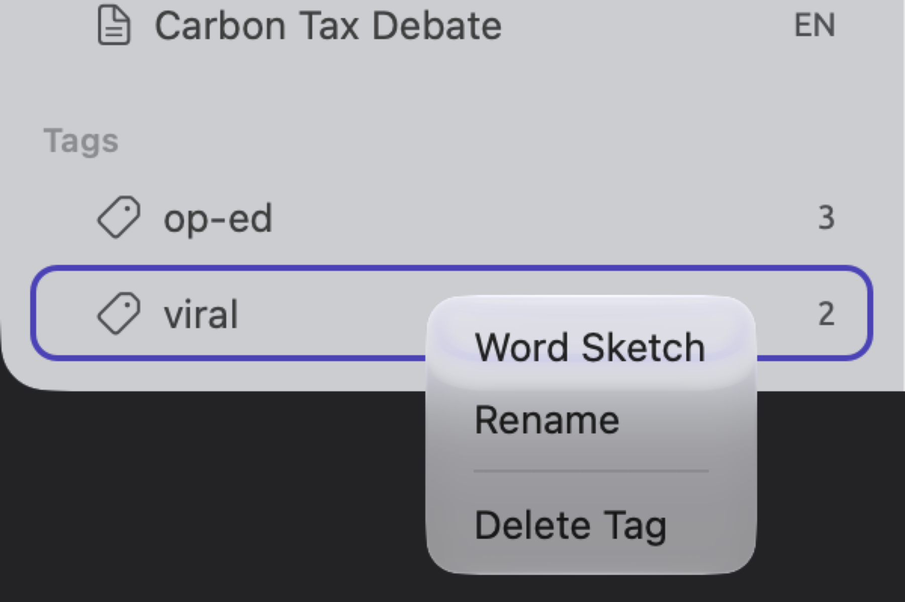
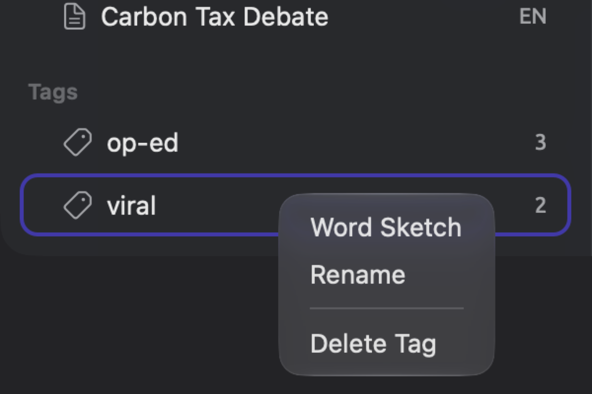
As soon as you tag any other document with “viral”, the count next to “viral” increases to 3, and the document becomes visible in the views associated with the tag. Once the last document in the project loses a tag, the tag disappears from the Tags section.
For tags in smart sets, refer to the Tags field presented earlier in this chapter, namely in the section titled How values are compared. Tags attached to codes can serve to filter the codebook entries; learn about tagging in codes, memos, and links in Chapter 7, Coding.
Attributes
The majority of comparisons made within LemmaLoom rely on attributes. Smart sets use attributes to collect documents based on their attribute values, while several analyses partition their outputs by those attributes (refer to the Where attributes can be used section below). Within “Climate Debate”, there are four attributes defined. “Stance” separates the texts by sides, “Readership” allows the “Wide Reach” set to extract broadly read texts, “Publication Date” timestamps each text, and “Outlet” keeps track of each text’s origin.
Attribute types
Every attribute has a type among six options. The type dictates what a value may be, how it should be entered, and what comparisons a condition may make about it.
| Type | A value is | Entered with | In “Climate Debate” |
|---|---|---|---|
| Text | any text | a text field | Outlet |
| Integer | a whole number, which may be negative | a number field | Readership |
| Decimal | a number that may have a decimal part | a number field | |
| Boolean | true or false | a checkbox | |
| Date | a calendar day | a date picker | Publication Date |
| Picker | one of a list of choices you set | a menu | “Stance”, with the choices “Activist”, “Skeptic”, and “Neutral” |
The Picker ensures consistent spelling, while the Attributes window sorts its values according to their choice order. Either an Integer or Decimal attribute type permits comparative operators like is at least, as well as range-based grouping via the Code Matrix or Sketch Space. A Date attribute enables both is before and is after operators, while the Code Matrix can group dates by year or month. Free text should be entered as values into a Text attribute. The “Outlet” attribute of “Climate Debate”, for example, uses a Text attribute type. Changing an attribute’s type (possible within limits) is discussed later in this chapter.
The Attributes window
The Attributes window displays each original document of a project alongside its attribute values in tabular form. The window can be accessed via the main menu option Project ▸ Attributes, or via the shortcut menu of the project under Projects in the sidebar (right-click on it and then choose Attributes). The window can remain open during work. The illustration depicts the window for “Climate Debate” ordered by “Readership” descending with the six activist documents selected.
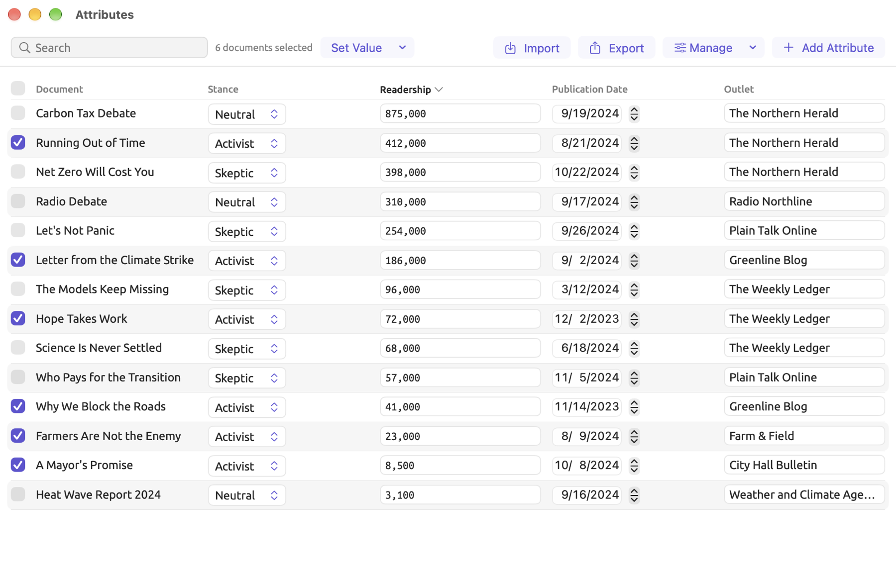
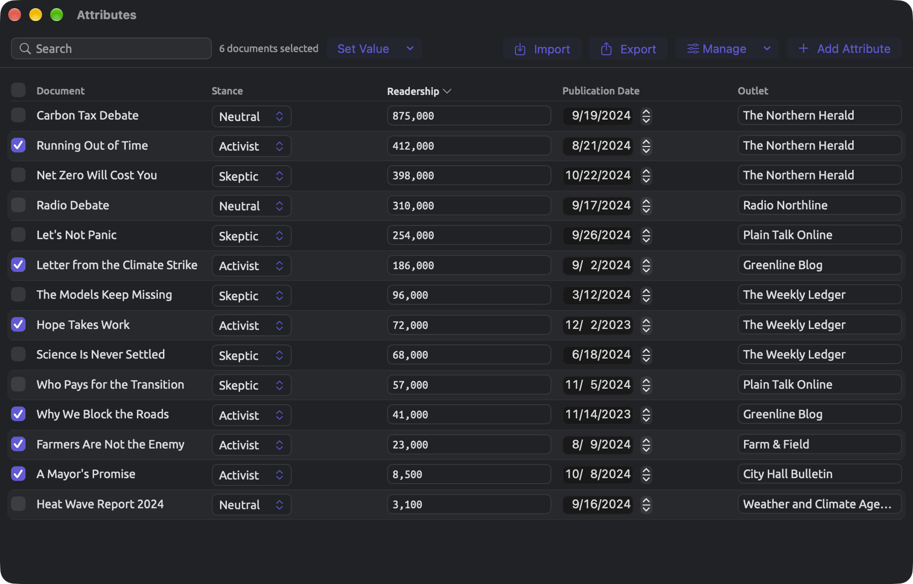
The row across the top contains Search, followed at the end by Import, Export, Manage, and Add Attribute. The body displays the table, which includes a checkbox column, a Document column, and a column for every attribute within the project. Without attributes in a project, the window will display only Import and Add Attribute.
The window displays original documents exclusively. Translation documents take on the attribute values of their original document counterparts, meaning that whatever value you enter for “Running Out of Time” will also apply to “Running Out of Time (German)”.
Defining an attribute
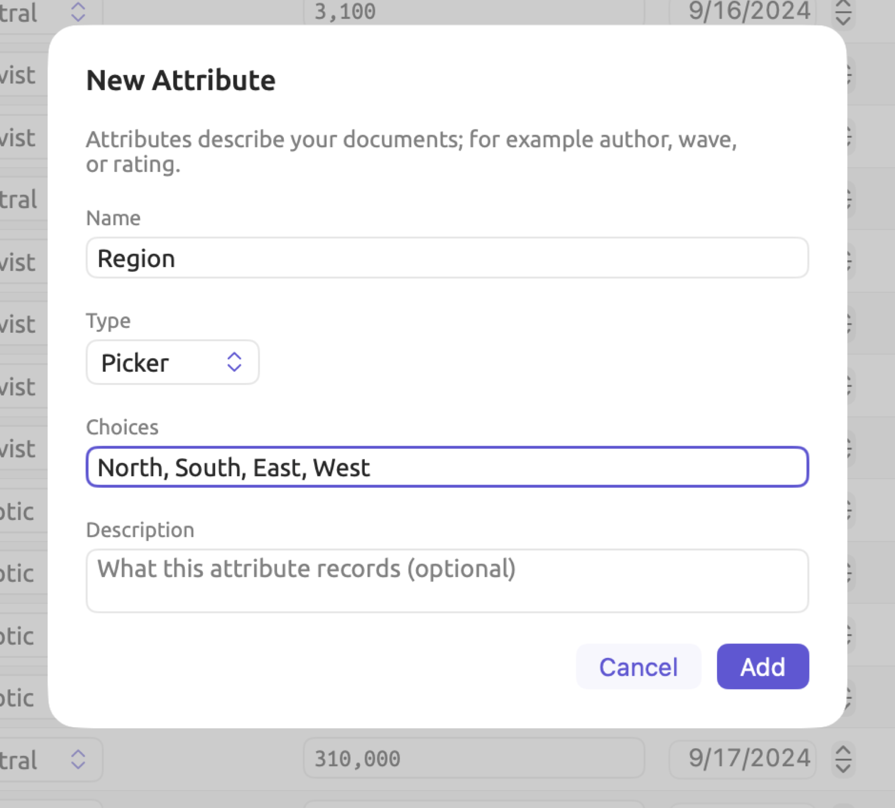
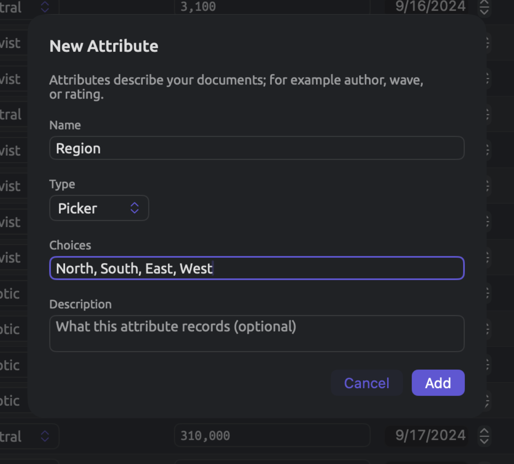
How to define attributes in the Attributes window:
- Click Add Attribute.
- In the New Attribute dialog, type a Name.
- Choose its Type.
- For a Picker, type its choices in Choices, one per row; Add Choice adds a row.
- If you like, describe in Description what the attribute records.
- Click Add.
The Add button is disabled if the Name field is left blank (Name is empty), if another attribute exists in your project with the same name, ignoring capitalization (Name already used), and when you add a Picker attribute without any choice options (No choices). Upon creation, the attribute shows itself as the right-most column of the table and contains no values per document.
You can also add attributes to your projects via the New Project and Project Properties dialogs, Document Properties, the Import Document dialog, the inspector, and by importing attribute values from spreadsheets. Aside from adding attribute values from spreadsheets and the New Attribute dialog, LemmaLoom provides suggestions of attributes available in all of your projects if at least three characters of a name were inputted. Suggestions show the attribute’s type. Picking one from the suggestions or directly entering its name copies its type and choices, keeping consistency among attributes in multiple studies. The newly added attribute belongs exclusively to this project.
Entering values
Click on a cell in the Attributes window and enter the value in a way that depends upon the attribute type:
- For Text, type out the text value.
- For Integer and Decimal, enter the number and press Return, or click somewhere else outside the cell. Only numeric inputs are valid here, and deleting the input will delete the attribute value.
- For Boolean, select or deselect the checkbox.
- For Date, choose a particular date from the date picker.
- For Picker, select an option from the menu, or choose None to remove the value.
All changes made while editing attributes are automatically saved.
The inspector is typically faster when dealing with individual documents. It displays the attributes and tags of the active document (see image below showing “Running Out of Time”, which has four values and the tag “op-ed”).
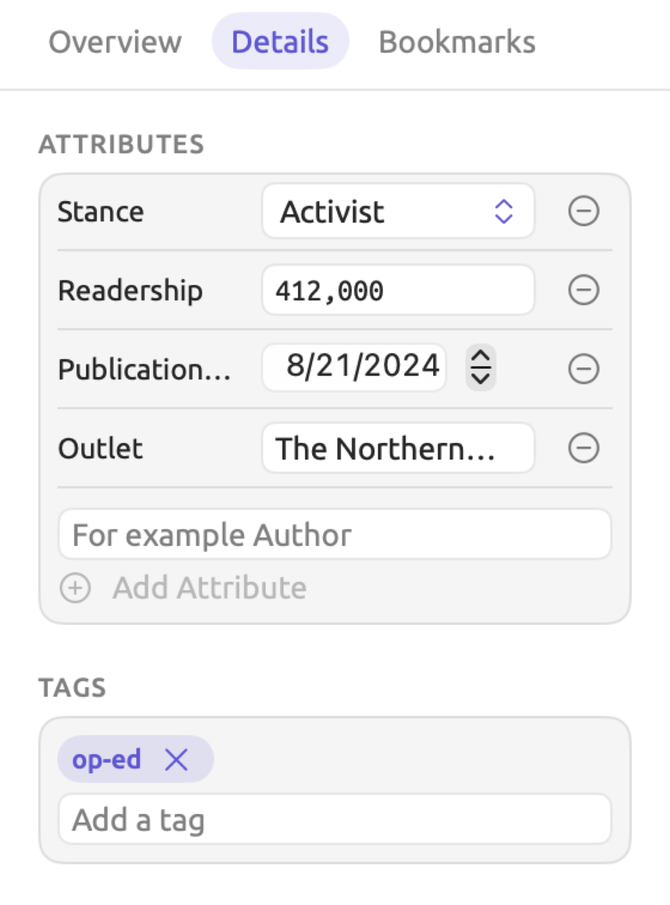
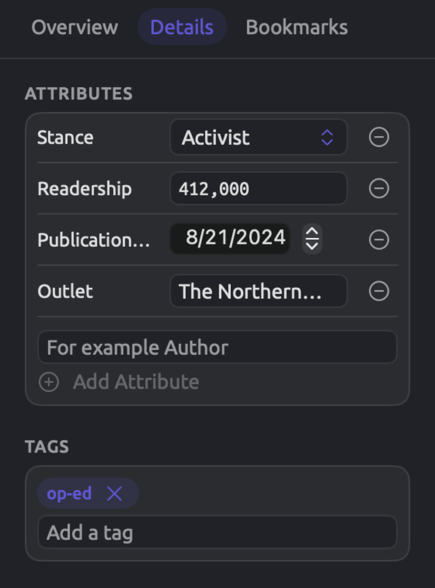
To investigate what the value of an attribute is for a specific document, you should open the document and click Text and then Details in the inspector. You will find each attribute with a value for this document listed below Attributes, each in a separate row. You can edit the value in its row. To delete the value while keeping the attribute intact in the project, click the remove button at the end of its row (Remove attribute). Changes are immediate.
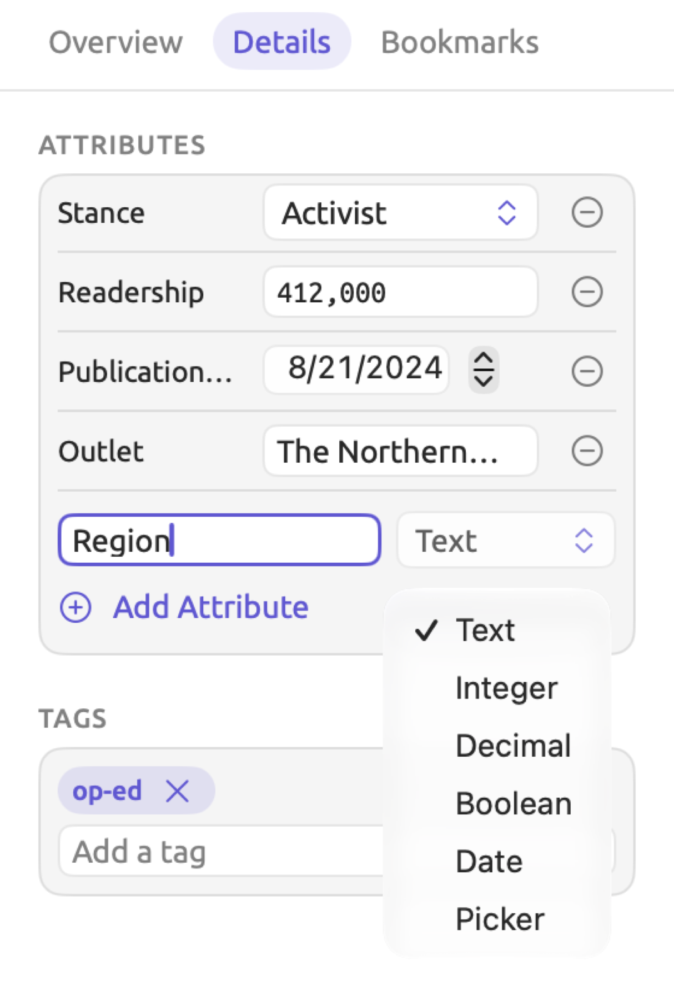
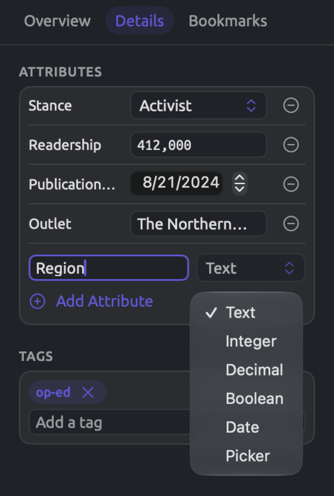
To assign a value to an attribute not currently shown:
- Type the attribute’s name in the field below the list. Suggestions appear once you have typed three characters.
- If the name is new to the project, choose a Type in the menu that appears. For a Picker, also type its choices.
- Click Add Attribute, or press Return.
- Enter the value in the new row.
The Add Attribute button is disabled in three instances, when the name is empty (Name is empty), when the attribute is already assigned to the document (Already added), and when creating a new Picker with no choices (No options). Every time you enter a new name in the field below the list, you add that attribute to the entire project. A row left with an empty value is deleted only after you leave the document, and the attribute stays in the project.
Any changes made to a translation’s value inside the inspector affect its corresponding original value.
Document Properties features identical fields in its Attributes part, which get saved once Save is pressed (refer to Attributes in Chapter 3, Projects and Documents). See Importing attribute values from a spreadsheet in Chapter 4, Importing Material for importing attribute values from spreadsheets.
Setting one value for many documents
If several documents have the same value for an attribute, you can assign the value to them simultaneously. In the “Climate Debate” project, six documents share the value “Activist” of “Stance”, five share “Skeptic”, and three share “Neutral”; hence, each value can be assigned to its documents in one step. See the figure showing the six activist documents selected in The Attributes window earlier in this chapter for the purpose of assigning their common value.
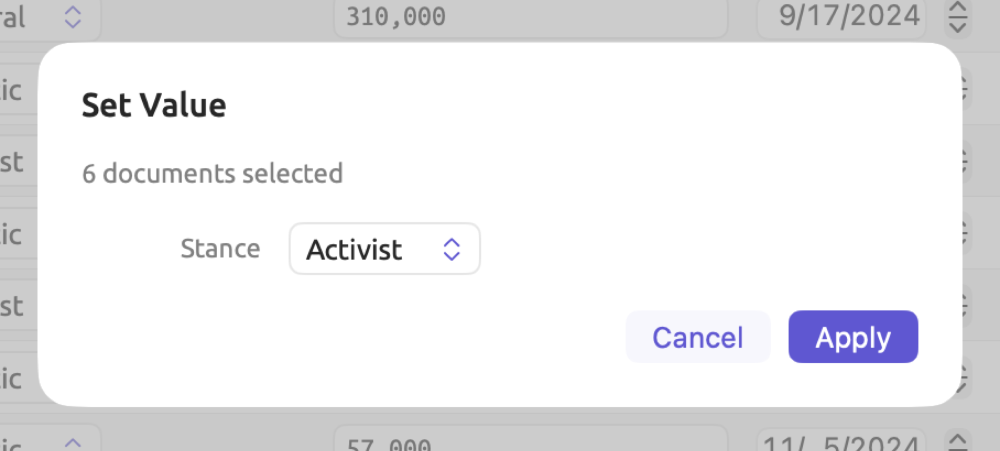
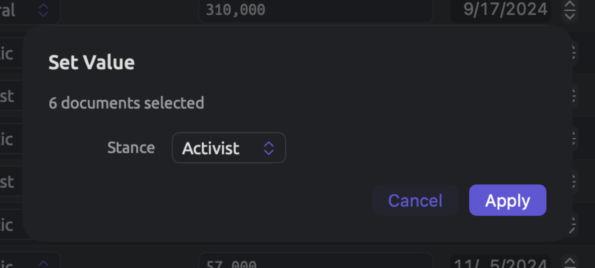
How to assign one value to several documents:
- In the Attributes window, select the checkboxes beside the documents. The checkbox at the top of the column selects or deselects every row shown.
- Beside Search, the window now shows the number of selected documents, such as 6 documents selected, and a Set Value menu. Choose Set Value and then the attribute.
- In the Set Value dialog, choose or enter the value.
- Click Apply.
The value replaces anything previously stored for that attribute in the selected documents. Edit ▸ Undo Set Value (⌘Z) reverses it.
Depending on whether your attribute is of type Picker, Boolean, Date, or any other type of value, the Set Value dialog offers you a menu, checkbox, date picker, or text field. When you are entering a Decimal, you can type the decimal separator that your Mac uses. Apply becomes disabled either when there isn’t anything in the input field (No value) or the entered value doesn’t meet the restrictions imposed by the attribute’s type (Invalid value), like entering about 40000 into “Readership”. Set Value is a feature for inputting values only; deleting existing values requires clearing the value in each document individually.
Set Value operates on selected visible rows. If you select multiple rows prior to entering something into Search, the search can hide some of them, even though the hidden rows stay selected. The number shown next to Set Value is thus equal to the actual number of currently selected and visible rows. To set the same value across multiple documents retrieved by searching, execute a search and click the checkbox at the top of the column.
Searching and sorting
Search lets you show only the rows containing the term you type in their titles or cells. Search ignores case. In the example project “Climate Debate”, a search term of ledger produces the texts titled “Hope Takes Work”, “The Models Keep Missing”, and “Science Is Never Settled”, which are the three texts from “The Weekly Ledger”.
When you click a column heading, the rows are sorted in increasing order based on the values in that column. A subsequent click reverses the sorting order. Arrows show which sorting direction is selected.
- Values of numeric type are sorted according to their magnitudes. Hence, 8,500 comes before 23,000.
- Picker values are sorted in the order of the Choices. With the choices “Activist”, “Skeptic”, and “Neutral”, activists come before the others.
- Textual items are sorted alphabetically, and numbers included within a text value are sorted numerically, e.g., “Draft 2” precedes “Draft 10”. Dates are sorted chronologically, whereas Boolean values are sorted false before true.
- Documents missing a value are positioned last, irrespective of sorting direction.
- In cases of ties involving identical ranking, documents are sorted alphabetically by title, ascending or descending depending on whether sorting is lowest-to-highest or highest-to-lowest.
Clicking the “Readership” heading twice sorts the rows from the highest “Readership” value. According to the figure in The Attributes window earlier in this chapter, this produces a sorted list from high to low, starting with “Carbon Tax Debate” (875,000), “Running Out of Time” (412,000), and “Net Zero Will Cost You” (398,000). Documents with fewer readers follow, ending with “A Mayor’s Promise” (8,500) and “Heat Wave Report 2024” (3,100). All documents lacking a value for this attribute come last. Sorting remains active until you close the window.
Changing an attribute
To edit an attribute, choose Manage, then the attribute, then Edit, or right-click on the attribute’s column heading and select Edit. The Edit Attribute dialog has the fields Name, Type, Choices (only for a Picker), and Description (which REFI-QDA format export includes); these correspond directly to the fields for New Attribute. Pressing the Save button updates the attribute definition; the Save button becomes disabled when the Name field is blank (Name is empty), or when there are no choices in a Picker (No choices).
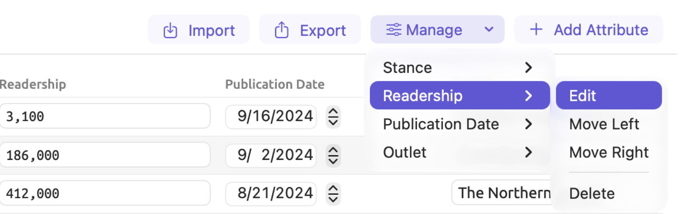
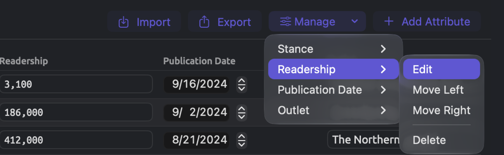
Choices in a Picker attribute may be edited to include additional options, to reorder existing options, or delete choices. The order of choices reflects how options appear in the menu and how they are sorted. Documents retain their choice value regardless of whether the list of choices changes.
- When deleting a choice that some documents have, those documents continue to hold that choice. The choice appears after all the listed choices in their menu and continues to be used in smart sets.
- Renaming a choice (e.g., changing “Skeptic” to “Critic”) leaves documents with the old choice, so moving them requires adding a new choice with the renamed label. Once added, documents having the old choice may then be reassigned to the renamed choice with Set Value before removing the old choice.
Changing an attribute’s type
It may occur that a certain attribute ends up needing a different type altogether; perhaps the values of your Text attribute should be limited to a predetermined number of options in order to maintain consistency, thus necessitating a Picker attribute type. The drop-down list under Type in the Edit Attribute dialog lists the current type along with each other type that is compatible with all the values currently set in the attribute. When you save, LemmaLoom rewrites the values in the new type. Compatibility of values is defined by:
| Type | Values that fit |
|---|---|
| Text | any value |
| Picker | any value |
| Integer | whole numbers written with digits, with a minus sign if needed and no leading zeros; 12.0 fits and becomes 12 |
| Decimal | numbers written with digits, a minus sign if needed, at most one decimal point, and no leading zeros, up to 15 significant digits (0.5 fits, .5 does not); 14 becomes 14.0 |
| Boolean | true, false, yes, no, 1, and 0, in any capitals; they become true or false |
| Date | dates in exactly the form 2024-08-21 (four-digit year, two-digit month and day, hyphens); 21.08.2024 does not fit |
The “Climate Debate” project has the following types available for its attributes in the menu:
| Attribute | Current type | Types offered |
|---|---|---|
| Stance | Picker | Text, Picker |
| Readership | Integer | Text, Integer, Decimal, Picker |
| Publication Date | Date | Text, Date, Picker |
| Outlet | Text | Text, Picker |
Imagine if somebody had entered about 40000 into a Text attribute used to track the number of readers. Integer would be made available to you only once you discovered that particular entry via Search or by sorting the column, then changed it to an integer.
Upon switching to Picker, if Choices is empty at first, LemmaLoom automatically enters whatever values the documents already have, sorted alphabetically. The figure below demonstrates this; “Outlet” was switched to Picker, and Choices included all eight outlets from “City Hall Bulletin” to “Weather and Climate Agency”. Reorder or extend the choices before you click Save.
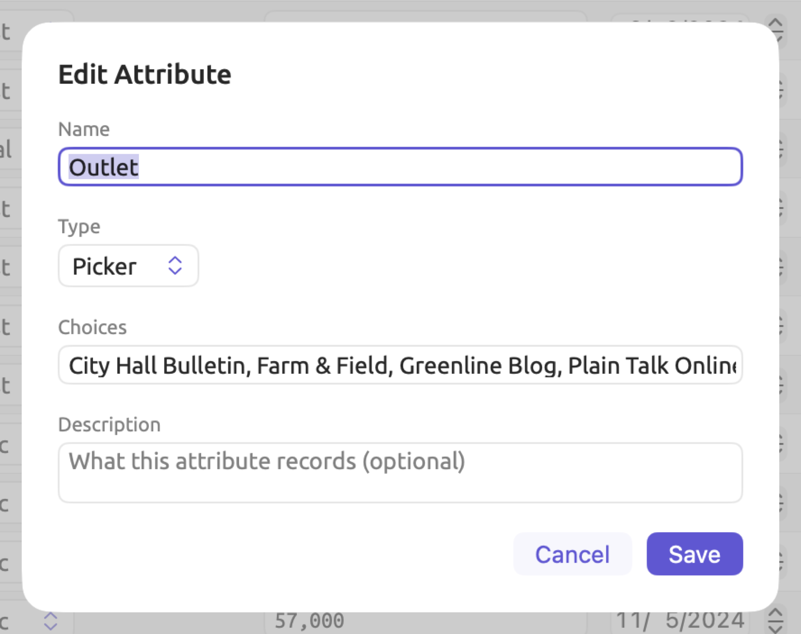
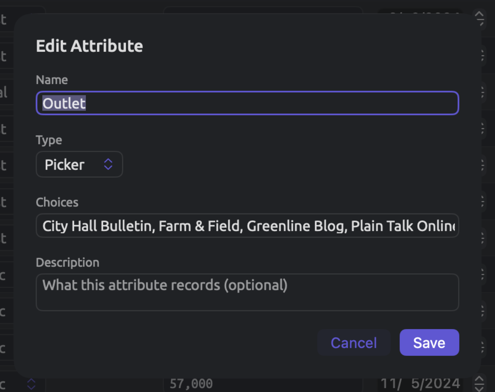
The new type also determines what types of comparison a condition can use. Changing between Integer and Decimal maintains all your comparisons without issue. Should you change an attribute’s type in any other way, however, you must verify your smart sets after the fact, as discussed in Changing a smart set earlier in this chapter.
Ordering attributes
Attributes display in the order that you created them. If you want to move an attribute, choose Manage, followed by selecting the attribute, and Move Left or Move Right; alternatively, right-click on the attribute column heading itself.
The order is consistent anywhere that attributes appear. This includes the columns of the Attributes window, the inspector, Document Properties, Project Properties, and the attribute menu of smart set conditions. New conditions begin with the first attribute, so the one tested most frequently should come before others.
Deleting an attribute
Deleting an attribute means selecting Manage, then the attribute, then Delete, or right-clicking its column heading and choosing Delete. The attribute will be instantly deleted along with its value from each of your documents in the project. Smart set conditions set on the attribute now become false for every document (see Changing a smart set earlier in this chapter). Edit ▸ Undo Delete Attribute (⌘Z) will restore the deleted attribute and its values. Deleting an attribute from Project Properties results in identical consequences when you click Save; Edit ▸ Undo Project Properties restores everything.
Exporting and importing values
Export creates a CSV file which spreadsheets can open, containing one row per item shown, in the order shown. It contains the document titles in the Document column, followed by all attributes as columns. The file name will be based on your project name, e.g., Climate Debate-attributes.csv.
Import reads attribute values from either a CSV or tab-delimited file, and even creates attributes during import if needed. See Importing attribute values from a spreadsheet in Chapter 4, Importing Material for details on how this works. Often, the simplest way to add or change many attribute values will be to export the table, modify it within a spreadsheet program, and reimport it.
Where attributes can be used
- Smart sets examine attribute values as discussed previously in Smart sets in this chapter.
- The Code Matrix can group its columns by attributes (refer to Chapter 13, Analyzing Codes).
- Sketch Space will compare the grammatical properties of words among different attribute values (refer to Comparing attribute values in Chapter 14, Sketch Space).
- Queries will test attribute values in rules (refer to Fields in Chapter 15, Building a Query). Compare will show counts for each value of an attribute side by side, along with a statistical test (refer to Chapter 16, Query Results and Statistics).
Codes can hold attributes too, which hold values for each individual coding instance. These are added directly to codes, and the Attributes window only displays the attributes pertaining to documents. Refer to Codes with attributes within Chapter 7, Coding for more information.
Sets and tags as scopes
The documents analyzed can be constrained by a set, a smart set, or a tag. The table below lists the locations where you choose each one:
| Where | Sets and smart sets | Tags |
|---|---|---|
| A tab opened from the sidebar, with its ten views | yes | yes |
| The menu after the word field in the Word Sketch window | yes | yes |
| The scope menu of Window ▸ Queries | the sets of the active project | no |
| Documents in the Auto Code dialog | yes | no |
| Export in the shortcut menu | yes | no |
| Scope ▸ Document set in the New Code and Edit Code dialogs (see Where a code can be used in Chapter 7, Coding) | yes | no |
| Compare With ▸ Set in a Keywords query (see Keywords in Chapter 16, Query Results and Statistics) | yes | no |
The drop-down menu after the word field in the Word Sketch window reflects the scope you are using currently. It begins by listing the whole project, followed by its sets (in alphabetical order), tags, and lastly the document in the active tab. Where only sets are offered, switch to the Queries view within the tab of a particular tag, or make a smart set with a Tags condition.
Translations
Regular sets, smart sets, and tags in the navigation sidebar consider only the original versions of documents. The translation will follow the original wherever it goes.
For example, only the original document is listed under a set (refer to Adding and removing documents above), while the smart set considers the values of the original document. Tags, attribute values, and the group are shared by an original and its translations, so they are always the same for both.
Analyzing a set, tag, or project will by default take place among original documents. Thus, analyzing “Running Out of Time” and “Running Out of Time (German)” would amount to analyzing one piece of text. The coding views of a set count codings in original documents too. When coding a passage in a translation document, LemmaLoom creates a coding instance in the same place in the corresponding original document; thus, the coding instance in “Running Out of Time (German)” will be counted once, in the original “Running Out of Time”.
There are two kinds of analysis methods that can read translations rather than original documents. Queries have a Corpus parameter in their Options condition; its settings allow for the corpus to consist of Originals, Translations, or Both (see Options in Chapter 15, Building a Query). Word sketches for a set, a tag, or the project provide options in a dropdown menu after the word field if translation documents are included. This menu has a Corpus section containing options Originals and an option for each available translation language, such as Translations (German) (see Chapter 12, Word Sketch). For additional information about working with translations, visit Chapter 9, Translations and Split View.